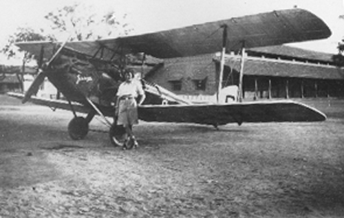

Born: 1 July 1903, Kingston upon Hull, East Yorkshire, England.
She was the eldest of three sisters. Her father, John William Johnson, was a partner in the family fish merchant business, Andrew Johnson, Knudtzon and Company.
Amy attended the Boulevard Municipal Secondary School, which later became Kingston High School. She completed her studies there before pursuing higher education.
Education: Graduated in 1923 with a Bachelor of Arts degree in Economics from the University of Sheffield.
After university, Amy worked as a secretary to a solicitor in London.
While working as a secretary in London, Amy developed a fascination with aviation. In 1928, she decided to pursue flying lessons, driven by a desire for adventure and a break from her routine life.
She began her flying lessons at the London Aeroplane Club at Stag Lane Aerodrome. Initially, she faced challenges — her first instructor doubted her potential, and it took her 16 hours of dual instruction (twice the usual amount) before she was ready for her first solo flight.
On June 9, 1929, after 15 hours and 45 minutes of dual instruction, Amy made her first solo flight in a de Havilland DH.60 Cirrus II Moth.
Amy set out to be the first woman to fly solo from England to Australia — a massive challenge back then, with very basic navigation tools and no modern flight aids.
She flew a de Havilland DH.60 Gipsy Moth, a light biplane she named “Jason” (after her father’s shipping company).
The trip covered roughly 11,000 miles (about 18,000 km), passing through Europe, the Middle East, India, Southeast Asia, and finally Australia.
Amy left Croydon Airport in England on May 5, 1930. She faced many challenges — rough weather, mechanical troubles, and long days navigating mostly by maps and landmarks.
After 19 days of flying, she landed in Darwin, Australia, on May 24, 1930. This made her the first woman to complete the solo flight from England to Australia. It was a huge milestone for women in aviation and inspired many others.
Amy Johnson married fellow aviator Jim Mollison in 1932. Jim was a Scottish pilot known for his own record-breaking flights, so they shared a deep passion for aviation.
Jim proposed to her during a flight together, just eight hours after they had first met.
Together, they were one of the most high-profile flying couples of their time, often making headlines. Their shared love for flying bonded them, and they even flew some long-distance flights together.
Despite their shared passion, their marriage was not without difficulties. Their demanding careers, long periods apart, and differing personalities created strains.
By 1938, Amy and Jim separated, and they eventually divorced. Both continued their individual flying careers afterward.
When WWII broke out, Amy Johnson joined the Air Transport Auxiliary, a civilian organisation that played a crucial role by ferrying new, repaired, or damaged aircraft between factories, maintenance units, and frontline squadrons. This freed up military pilots for combat duties.
Amy flew a wide range of aircraft, from single-engine fighters to heavy bombers, often in challenging weather and without radios or instruments. Her skills as both a pilot and ground engineer helped her adapt quickly to the different planes she had to handle.
On January 5, 1941, while flying a ferry flight for the ATA during WWII, Amy Johnson was returning over the Thames Estuary when her plane went down.
It’s believed her aircraft experienced mechanical trouble or she got lost in poor weather. She bailed out over the water but sadly drowned. Her body was never recovered.
The official verdict is accidental death, but the mystery remains due to the lack of conclusive evidence.